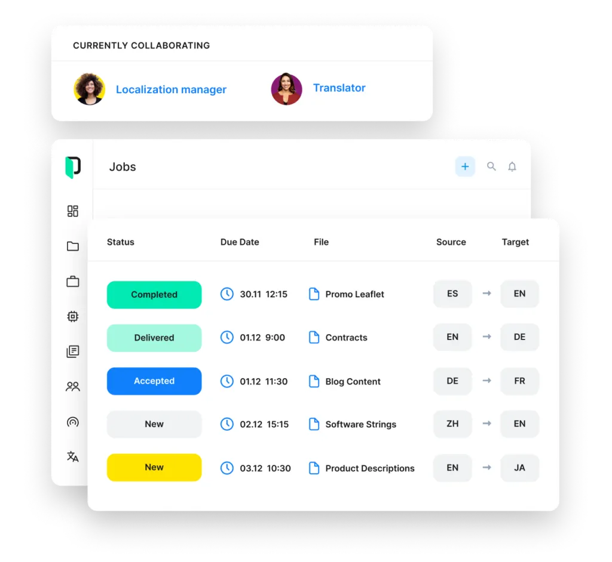

Definition
Mika Visibility is an educational and diagnostic product for B2B websites. This note is about translation management software localization translation workfl on a multilingual site: one company, parallel language URLs, and the same product facts on each URL. GEO here means generative engine optimization, not geographic targeting. A high health finding never becomes an automatic growth finding.
Short answer
Treat translation management software localization translation workfl as a consistency problem first. The company name, the product name, specifications, applications, claims, and the questions you actually answer have to match across languages. Which valve port matches this manifold? should receive the same constraints on every alternate. Market depth can be added. The engineering fact cannot be quietly replaced.

Fields that must say the same thing
Compare six fields before you compare traffic. Company name. Product name, including the model code for solenoid valve. Specifications, especially pressure rating and port size. Applications, named as hydraulic isolation rather than a vague sector word. Claims, including the condition in “holds only to the published pressure rating”. Question coverage: the buyer question is either answered, partial, or uncovered in that language.
English stays at the root. Chinese stays under /zh/. Do not add an /en/ prefix. Language labels on the homepage illustration include EN, 中文, Español, العربية, Русский, and Deutsch. Those labels are a picture of the idea, not a claim that every label already has a deep market site. Each language you do publish still carries independent SEO Health, SEO Growth, GEO Health, and GEO Growth.
The issue on the page
Translation and localization do different jobs
Translation carries the same facts into another language. Localization is the extra work when the market’s question is actually different: units buyers use, documents they ask for, or an application that is common there and rare at home. Both still start from one product. solenoid valve does not get a new pressure rating and port size just because the sentence was rewritten.
A thin mirror translates navigation and leaves the specification table short. Buyers notice. Answer systems notice too, because the two language versions no longer support the same statement. If a market truly needs a different offer, say so in both languages. Silent omission reads as a contradiction, not as local flavor.
Terminology is an entity decision. The product name, the model code, and the standard named in a claim should be stable strings. A glossary helps translators. It does not replace a check that the published pages still match. Question coverage can be deeper in the local language. It should not contradict the home-language datasheet.
Signals that travel with the page
Draft language folders are easy to leave crawlable. If the copy is not reviewed, keep it out of the index with a deliberate robots rule and do not advertise it in hreflang or the sitemap. A re-audit after publication checks that the draft host did not become the canonical by accident.
A subdomain splits the host. Links, cookies, and crawl paths no longer match the root by default. If you use one, the product facts still have to match the root language, and the language switcher has to land on the equivalent product URL rather than the subdomain homepage.
What to check
- Open the English and Chinese URLs for solenoid valve side by side and read pressure rating and port size aloud. If one side is shorter, the fields do not match.
- Confirm reciprocal hreflang among the live canonicals, including a self-reference, with x-default on the English URL.
- Follow the in-language internal links from the hub to the product page so the alternate is not an orphan.
- Read the direct answer to “Which valve port matches this manifold?” and check that the condition in “holds only to the published pressure rating” survived translation.
What this does not claim
This page does not guarantee search rankings, AI answer citations, or inclusion in AI Overviews, ChatGPT, Gemini, or any other answer product. Correct hreflang, a tidy /zh/ folder, and matching facts about solenoid valve make the site easier to understand. They are not a placement promise. Homepage sample counters are illustrative interface, not results.
A practical example
Example, not a customer story. A manufacturer publishes solenoid valve in English and opens /zh/ by translating the menu. The Chinese page shortens pressure rating and port size and drops the condition in “holds only to the published pressure rating”. A buyer asking “Which valve port matches this manifold?” finds a fluent page and the wrong limit. Diagnosis separates the issues: GEO Health for the entity drift, SEO Growth for the thin market page, GEO Growth for the unanswered local question. The blueprint restores the specification, writes the direct answer on the product URL, and re-audits. Nothing in that loop promises a ranking.
FAQ
What should we do about translation management software localization translation workfl?
Treat translation management software localization translation workfl as a consistency problem first. The company name, the product name, specifications, applications, claims, and the questions you actually answer have to match across languages. Which valve port matches this manifold? should receive the same constraints on every alternate. Market depth can be added. The engineering fact cannot be quietly replaced.
Which facts about solenoid valve must match?
Compare six fields before you compare traffic. Company name. Product name, including the model code for solenoid valve. Specifications, especially pressure rating and port size. Applications, named as hydraulic isolation rather than a vague sector word. Claims, including the condition in “holds only to the published pressure rating”. Question coverage: the buyer question is either answered, partial, or uncovered in that language.
Does this guarantee rankings or AI citations?
This page does not guarantee search rankings, AI answer citations, or inclusion in AI Overviews, ChatGPT, Gemini, or any other answer product. Correct hreflang, a tidy /zh/ folder, and matching facts about solenoid valve make the site easier to understand. They are not a placement promise. Homepage sample counters are illustrative interface, not results.
Next step
Run a structured SEO + GEO audit to see health findings, growth gaps, and a blueprint you can act on.
Clearer entities, answers, evidence, and context make pages easier to understand and reference. Results in any answer product are not guaranteed.